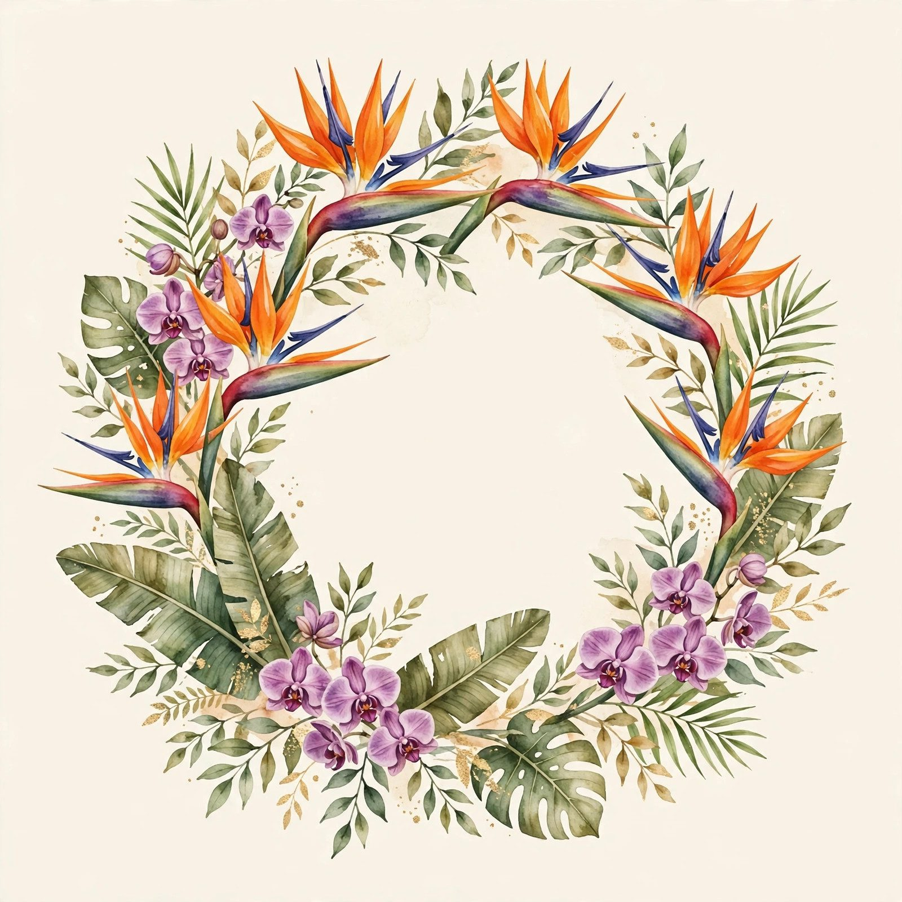
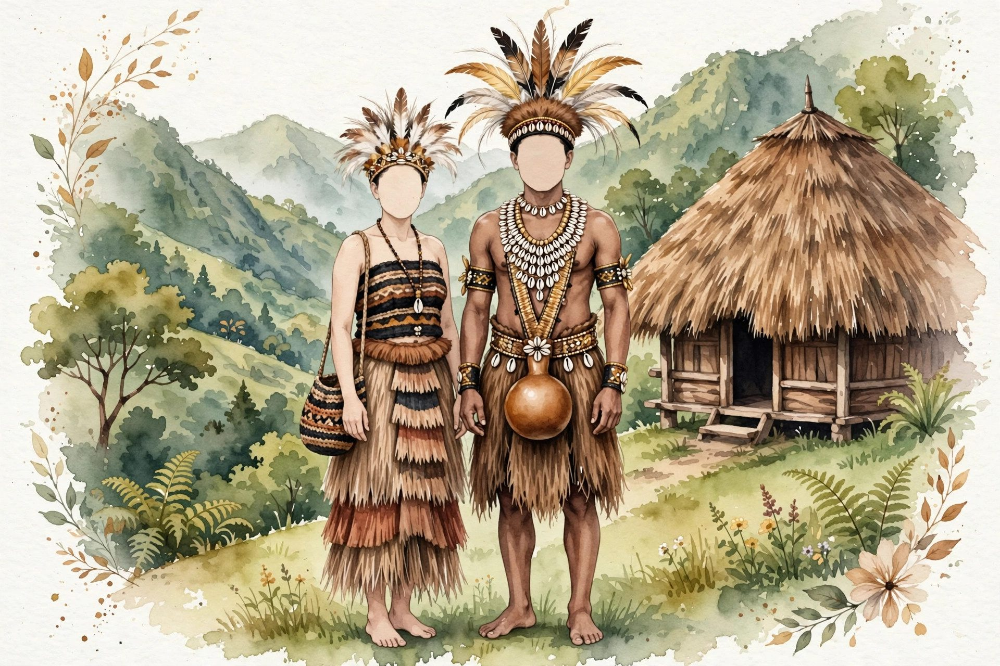
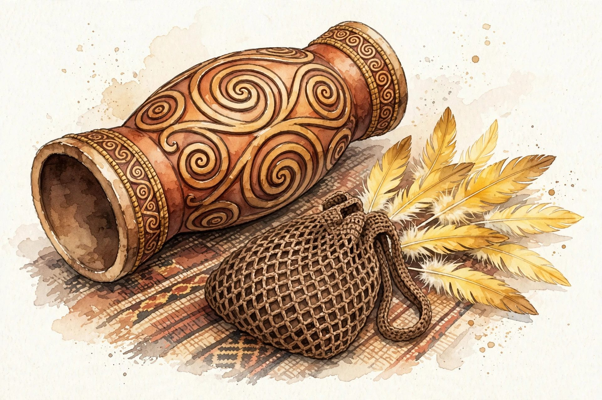
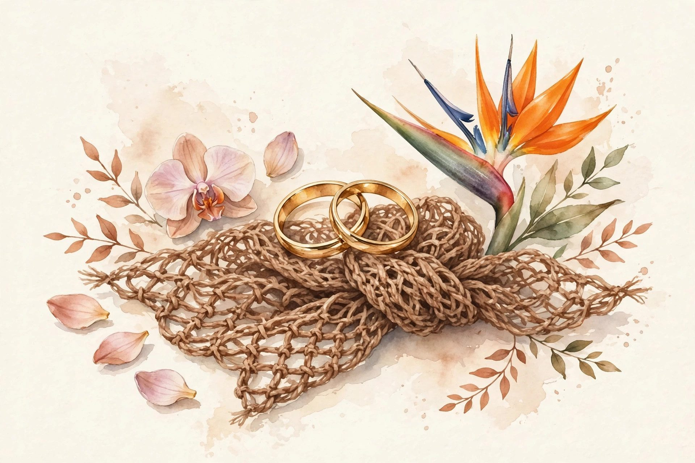

Sabtu
Pemberkatan Pernikahan
19
Desember 2026
Pukul 08.00 – 10.00 WIT
Gedung Pertemuan Contoh
Wamena, Papua Pegunungan
Undangan Pernikahan

Maria Wenda
&
Yosua Tabuni
SABTU · 19 · 12 · 2026
Kepada Bapak/Ibu/Saudara/i
Keluarga Besar Tabuni
Mohon maaf apabila terdapat kesalahan penulisan nama dan gelar.
Syalom, damai sejahtera bagi kita semua
Dengan memohon berkat dan penyertaan Tuhan, kami bermaksud mengundang Bapak/Ibu/Saudara/i untuk menghadiri acara pernikahan kami:
Maria Wenda, S.Pd.
Putri kedua dari
Bapak Yulius Wenda dan Ibu Ester Kogoya
&
Yosua Tabuni, S.T.
Putra pertama dari
Bapak Simon Tabuni dan Ibu Martha Wanimbo

Menuju hari bahagia kami, Sabtu, 19 Desember 2026.
Hari bahagia telah tiba. Sampai jumpa di lokasi acara.
Merupakan suatu kehormatan dan kebahagiaan bagi kami apabila Bapak/Ibu/Saudara/i berkenan hadir dan memberikan doa restu.
Sabtu
19
Desember 2026
Pukul 08.00 – 10.00 WIT
Gedung Pertemuan Contoh
Wamena, Papua Pegunungan
Sabtu
19
Desember 2026
Pukul 11.00 – 13.00 WIT
Gedung Pertemuan Contoh
Wamena, Papua Pegunungan
Momen-momen kecil yang kami abadikan menjelang hari bahagia.


Mohon konfirmasi kehadiran Bapak/Ibu/Saudara/i, dan jangan lupa tinggalkan doa terbaik untuk kami.
Keluarga Besar Wenda · Hadir
Selamat untuk Maria dan Yosua. Tuhan memberkati pernikahan kalian berdua, bahagia sampai anak cucu. Sampai jumpa di Wamena.
Yuliana Kogoya · Hadir
Akhirnya sampai juga di hari yang ditunggu. Turut berbahagia untuk kalian berdua, lancar sampai hari H ya.
Daniel Yikwa · Masih Ragu
Tuhan memberkati. Semoga diberi kelancaran dalam segala persiapannya sampai hari H.
Doa restu Bapak/Ibu/Saudara/i adalah hadiah terindah bagi kami. Namun, apabila berkenan memberikan tanda kasih, kami sediakan dengan penuh terima kasih:
Bank Contoh Contoh Fiktif
0000 0000 00
a.n. Maria Wenda
Nomor di atas hanya contoh fiktif untuk keperluan demo, bukan rekening sungguhan.
Merupakan suatu kehormatan dan kebahagiaan bagi kami beserta keluarga apabila Bapak/Ibu/Saudara/i berkenan hadir dan memberikan doa restu kepada kedua mempelai.
Atas kehadiran serta doa yang diberikan, kami mengucapkan terima kasih yang sebesar-besarnya.
Syalom, Tuhan memberkati kita semua
Kami yang berbahagia,
Maria & Yosua
beserta keluarga besar kedua mempelai